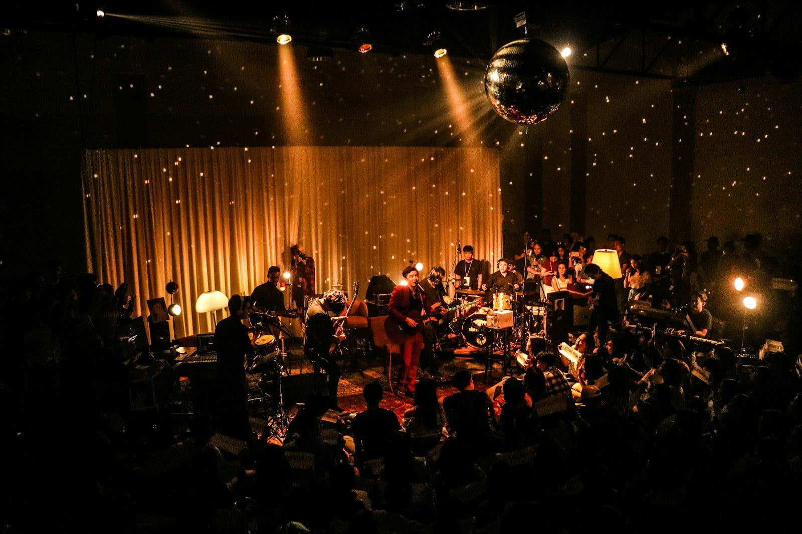

PLANNING
What a jazz band costs in Denver
A jazz band's price depends first on its size. Here's what the market charges for one guitarist, a duo, a trio and a quartet, for an hour and for an evening.

- Nationally, a jazz trio or acoustic duo for a dinner runs $500 to $3,000, and a solo musician or duo for a cocktail hour runs $200 to $700.
- Across a four-hour evening the market puts a duo at $1,500 to $2,500 and a trio at $2,000 to $3,500. One more musician in the band is the difference between those two prices.
- Denver bands run $2,500 to $8,000, with a trio at the bottom of that range and a full band with horns at the top. The top of the national market, a California jazz trio for a cocktail hour, runs $3,450 to $6,450.
- The price depends on how many musicians you book, how many hours they play and the date. A holiday weekend in Denver can add 20 to 30 percent.
You search for what a jazz band costs for two hours, a cocktail hour or a wedding, and you get back a page of price ranges with no band sizes on them. Those ranges are real, but they leave out what decides where you land in them, which is how many musicians are playing and for how long.
A jazz band can be one guitarist, a duo, a trio, or a quartet with a horn or a singer. They all play the same kind of jazz standards, just with different numbers of musicians. So here’s what the market charges, size by size and hour by hour. Each price is somebody else’s published number, so you can start your budget before you contact a band. Want a recommendation for your date? Just reach out.
How much does a jazz band cost for a cocktail hour? #
This may be the most common jazz booking, and it’s the smallest. It’s usually one guitarist, or a guitarist with an upright bass player, for the hour between a ceremony and dinner or the hour before a corporate program starts.
The market puts a solo musician or an acoustic duo for a cocktail hour at $200 to $700, and a classical string duo or trio for a Denver ceremony or cocktail hour at $800 to $2,000. Those two prices are the low end and the high end of a one-hour booking in Denver, with one musician at the low end, a formal ensemble at the high end, and a jazz duo somewhere in between.
The reason a single hour costs what it does is that the hour of playing isn’t the whole job. The musicians still have to drive to the venue, load in, do a sound check, play and pack everything up, however long the music lasts. The hours are the smaller part of the cost, which is why a one-hour booking usually won’t cost a quarter of a four-hour one.
How much does a jazz trio cost for a dinner? #
A trio is a natural choice for a dinner, and the market’s price for a jazz trio or acoustic duo is $500 to $3,000. The price within that range depends on how long the music plays and how much equipment the band brings, from two musicians for two hours at the low end to a trio with its own sound system for a whole evening at the high end.
A trio with the drums played with brushes can keep the volume low enough for your guests to talk easily through the whole meal. That makes the dinner price a good one to budget from, because the format is the same at a client dinner, a wedding or a sixtieth birthday, and so is the price range.
Jazz band prices by size and length #
| What you're booking | What the market charges | Whose market |
|---|---|---|
| A solo musician or duo for a cocktail hour | $200 to $700 | United States |
| A jazz trio or acoustic duo for a dinner | $500 to $3,000 | United States |
| An acoustic duo across a four-hour evening | $1,500 to $2,500 | United States |
| A trio across a four-hour evening | $2,000 to $3,500 | United States |
| A four-to-five-piece band for an event | $1,000 to $5,000 | United States |
| A cover or jazz band for a corporate event | $2,500 to $8,000 | United States |
| A Denver band, from a trio up to a full band with horns | $2,500 to $8,000 | Denver |
| A jazz trio for a cocktail hour, the top of the market | $3,450 to $6,450 | California |
| A jazz quartet for a reception, the top of the market | $4,250 to $7,250 | California |
As you go from a duo for a cocktail hour to a quartet for a full evening, you add either a musician or an hour, and the price goes up with it. The two California prices at the bottom are the top of the national market, an agency’s price for a jazz trio and quartet, and they give you something to compare a Denver price against. In our experience, nobody in Colorado quotes at those prices.
The table also can’t show you what’s included in each price. One quote may include a sound system and another may assume the venue has one, so the same price can cover two very different things, and sound is what most often separates them.
How much does a jazz duo or trio cost for a whole evening? #
For a whole evening rather than an hour, the market gives two clear prices. An acoustic duo for a four-hour reception runs $1,500 to $2,500, and a trio for the same four hours runs $2,000 to $3,500. The only difference between those two is one more musician, so the gap between the prices is what that musician costs.
We haven’t seen a published trio price just for Denver. The Denver band range of $2,500 to $8,000 begins at the trio and ends at a full band with horns, so the trio sits at the bottom of that range rather than in the middle of it. A quartet, which is the trio plus a horn or a singer, costs a step more. For a band of five or six with horns and a singer, check out our corporate cost guide.
What changes the price of a jazz band? #
Three things change the price, and each is worth asking about.
- How many musicians. Going from a duo to a trio adds one more person for the whole evening, and going from a trio to a quartet adds another. This makes the biggest difference, and it’s also where people most often go wrong. For a dinner with forty guests, a duo or a trio is usually plenty, and in our experience, hosts often book bigger than they need.
- How many hours. A cocktail hour and a four-hour evening are different jobs, and the short one costs more than the math suggests because the setup work is the same. If you want the band to keep playing, each extra hour can run $200 to $400 across Colorado.
- The date. A holiday weekend in Denver may cost 20 to 30 percent more, and New Year’s Eve has its own pricing everywhere. Travel beyond the Denver area can add to the cost, and for the farthest resorts you’ll pay for a night’s lodging, too.
What a jazz band costs for a wedding #
Couples usually book a jazz band at more than one size across the wedding day, which makes it hard to budget from a single range. A duo for the ceremony and the cocktail hour is the one-hour price above, twice over. A trio through dinner is the dinner price. A quartet for the first dance and the dancing that follows is the four-hour trio price plus one more musician.
A trio for the evening falls in the $2,000 to $3,500 range. If you’d like strings for a Denver ceremony or cocktail hour, a classical string duo or trio falls in the $800 to $2,000 range. One booking that covers the whole day can cost less than two, because you’re only paying once for the drive, the load-in and the sound system. Learn more about sizing the band for each part of the day on our jazz band for a wedding page.
What a jazz band costs for a corporate event #
Nationally, a cover or jazz band for a corporate event runs $2,500 to $8,000, and the dinner price of $500 to $3,000 is the one to use for a seated dinner with remarks, which is what most corporate jazz bookings are. Want more ideas for a corporate event? Check out our corporate jazz band page.
Have a question about what’s included? Just let us know. When you’re comparing bands, it’s a good idea to ask each one what’s included in the price.
These prices come from published 2026 market guides, as of September 2026. We quote each date one-by-one.